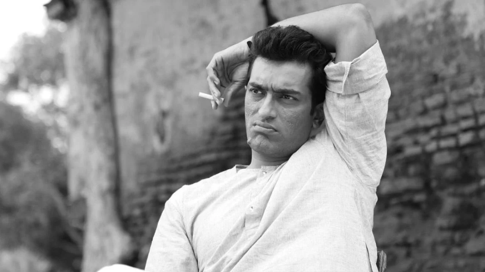
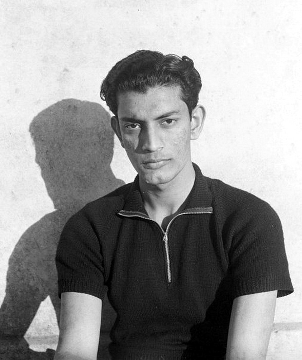

About Satyajit Ray

Born: 2 May 1921, Calcutta (Now Kolkata)
Died: April 23, 1992, Calcutta
Known for: filmmaker, writer, illustrator, composer
Early Life
Ray was an only child whose father died in 1923. His grandfather was a writer and illustrator, and his father, Sukumar Ray, was a writer and illustrator of Bengali nonsense verse. Ray grew up in Calcutta (now Kolkata) and was looked after by his mother.
Education
He entered a government school, where he was taught chiefly in Bengali, and then studied at Presidency College, Calcutta’s leading college, where he was taught in English. By the time he graduated in 1940, he was fluent in both languages. In 1940 his mother persuaded him to attend art school at Santiniketan, Rabindranath Tagore’s rural university northwest of Calcutta. There Ray, whose interests had been exclusively urban and Western-oriented, was exposed to Indian and other Eastern art and gained a deeper appreciation of both Eastern and Western culture, a harmonious combination that is evident in his films.

Early Career
Returning to Calcutta, Ray in 1943 got a job in a British-owned advertising agency, became its art director within a few years, and also worked for a publishing house as a commercial illustrator, becoming a leading Indian typographer and book-jacket designer. Among the books he illustrated (1944) was the novel Pather Panchali by Bibhuti Bhushan Banarjee, the cinematic possibilities of which began to intrigue him. Ray had long been an avid filmgoer, and his deepening interest in the medium inspired his first attempts to write screenplays and his cofounding (1947) of the Calcutta Film Society. In 1949 Ray was encouraged in his cinematic ambitions by the French director Jean Renoir, who was then in Bengal to shoot The River. The success of Vittorio De Sica’s The Bicycle Thief (1948), with its downbeat story and its economy of means—location shooting with nonprofessional actors—convinced Ray that he should attempt to film Pather Panchali.